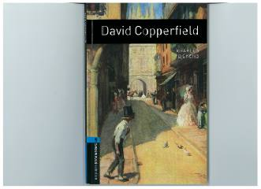

DCDevid Kopperfildning murakkab hayot yo'li va voyaga yetish jarayoni tasvirlangan klassik roman.
Charles Dickensning ushbu mashhur romani bosh qahramon Devid Kopperfildning og'ir bolalik davridan tortib, voyaga yetguniga qadar bo'lgan hayot yo'lini hikoya qiladi. Asar qahramonning turli insonlar bilan uchrashuvi, hayotiy qiyinchiliklar va o'z o'rnini topish yo'lidagi kurashlari haqida so'z yuritadi.